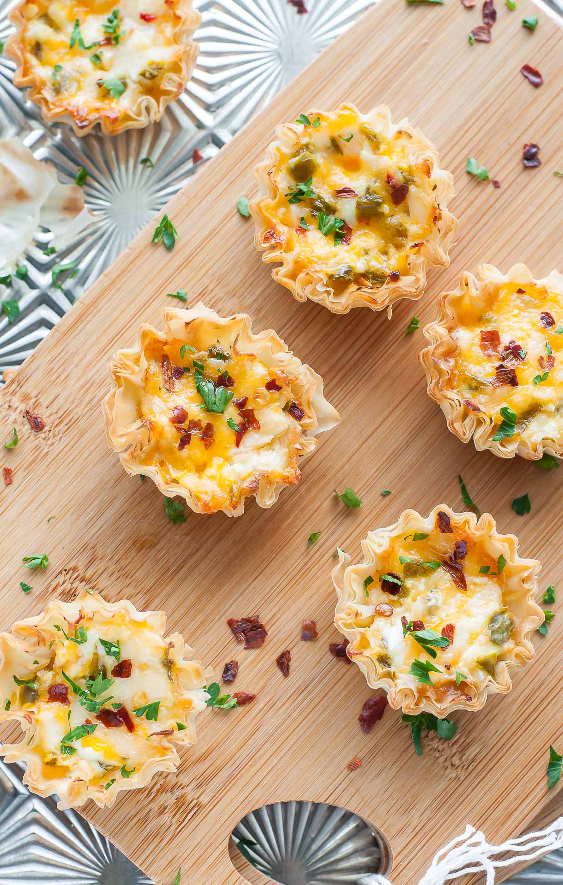

Jalapeno Popper Cups

Didn't have enough Jalapenos to make full out poppers, but improvised for a creamy and spicy appetizer.
Ingredients
12 mini phyllo tart shells
4 ounces cream cheese, softened
½ cup shredded Cheddar cheese
2 jalapeno peppers, seeded and chopped
1 tablespoon hot pepper sauce
bacon bits
Directions
- Preheat an oven to 350 degrees F (175 degrees C). Place phyllo cups onto a baking sheet.
- Stir together cream cheese, Cheddar cheese, jalapenos, and hot sauce in a bowl. Spoon mixture into phyllo cups. Sprinkle bacon bits on top. Bake in preheated oven until golden brown, about 15 to 20 minutes. Serve warm.
Original Recipe